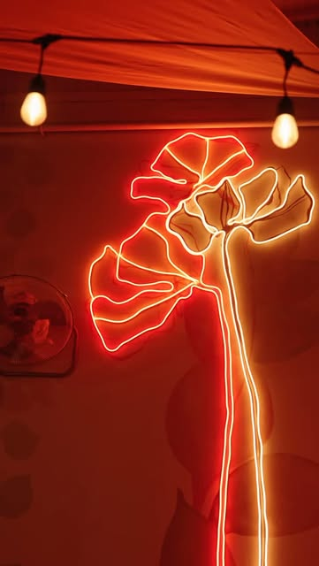

BIO COCOF, CHIȘINĂU
Un loc pentru mese fără grabă.
Dimineața vii pentru ceva proaspăt. Seara rămâi pentru vin, grill și atmosfera din curtea interioară. Meniul include opțiuni fără gluten și deserturi vegan & raw.
01Mic dejun · Prânz · Cină
02Opțiuni fără gluten
03Deserturi vegan & raw